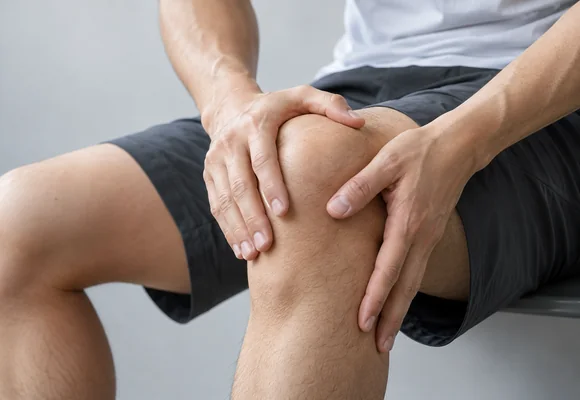
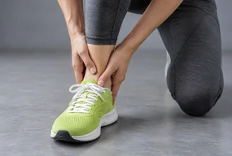
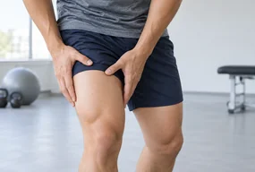
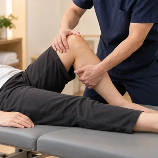
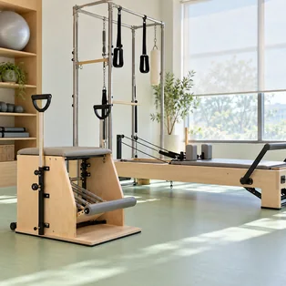
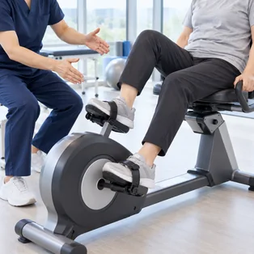
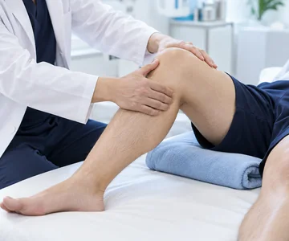
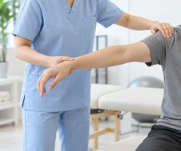
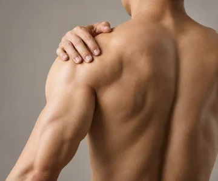

GODEUN REHABILITATION CENTER
스포츠손상 재활

스포츠손상
경기나 여가 운동 중 발생한 손상을 말합니다.
현재 상태에 맞는 재활치료를 통해
다시 스포츠 활동을 할 수 있도록 신체 기능을 회복해 갑니다.

염좌
인대가 늘어나거나 파열되는 경우

긴장
골과 근육을 연결하는 건이나
근육이 늘어나거나 파열되는 경우
골절
강력한 일회성 외력, 반복적인
스트레스에 의해 시간이 경과하며 발생
탈구
골과 골이 만나는 부위인
관절이 분리되는 경우
재활 치료
도수치료
숙련된 물리치료사가 1:1 수기로
재활치료를 진행합니다.
운동교육
관절의 제한된 움직임을 풀어 충분한 가동 범위를 확보합니다.
운동 강도를 조절하며 근력과 지구력을 높여 갑니다.
재활 특징
01

숙련된 물리치료사의
세심한 치료
02

재활장비,
운동 교육실 시설
03

1대1 맞춤처방
프로그램
곧은 재활프로세스
스포츠손상 재활 프로세스는
어떻게 진행되나요?

인대 및 힘줄이 손상된 경우에는
약물과 주사 등 필요한 방법으로 통증의 변화를 살피고

물리치료, 운동치료 등 다양한 보존적
치료를 활용해 손상된 부위의 기능 회복을 돕습니다.

급성·만성·과사용 등 손상의 유형을 살피고
손상 정도에 따라 개인별 재활치료를 진행합니다.
재활 효과
손상된 조직의
빠른 치유
관절 주변
조직 강화
재발방지 및
신체 능력 향상
일상생활 또는
스포츠현장 복귀